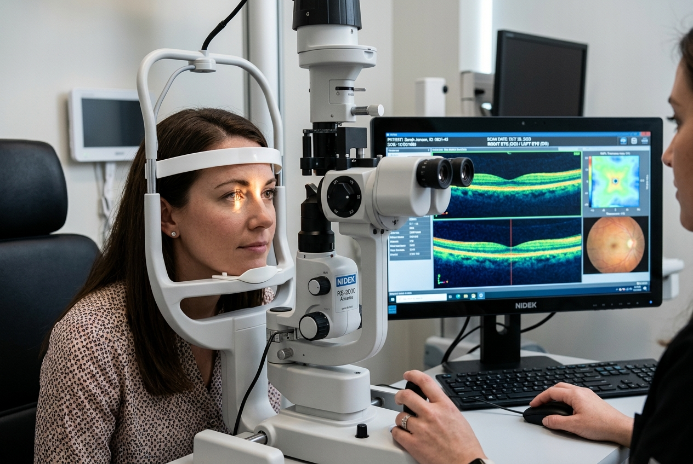

EYEPROS SYNERGY · SHARED CARE AGREEMENT v2.2
Specialist eye care. A connected care partnership.
A formal, clinically governed partnership for UK optometrists. Refer private ophthalmic surgical patients to NHS consultant ophthalmologists, retain the 4-week postoperative assessment, and receive transparent remuneration for your clinical care.
PARTNERSHIP VALUE
Four clinical benefits built into our agreement
The Synergy Shared Care Agreement v2.2 establishes clear clinical expectations and professional respect between your practice and our surgical centres.
Continuity of Care for Your Patients
You have built the relationship with your patient. Following surgery, the patient is discharged back to your practice for their scheduled 4-week postoperative assessment under our protocol, ensuring long-term continuity.
Consultant Escalation & 24/7 Helpline
Direct clinical support when you have concerns. Every patient case is assigned a named escalation contact, and both you and your patient have direct access to our Urgent Clinical Helpline on 0333 77 272 77, Option 5.
Structured Reporting Within 48 Hours
No waiting weeks for communication. EyePros issues a structured discharge letter via the Syndesis portal within 48 hours of surgery, detailing procedure findings, target refraction, prescribed drops, and monitoring guidance.
Transparent Remuneration Without Quotas
Your clinical chair time, examination, and diagnostic scans are recognized through a transparent shared-care fee structure (up to £250 per eye). Fees are flat and never contingent on referral volumes or targets.
THE SHARED-CARE PATHWAY
Five defined stages from assessment to discharge
Every stage of patient care has clearly designated clinical responsibilities and agreed timeframes.
Pre-Referral Assessment
Identify suitable candidates against NICE eligibility criteria. Discuss surgical options and lens choices so the patient makes an informed decision.
Secure Referral Submission
Submit via the Syndesis platform (or GOS 18 / PMS). Upload relevant diagnostic findings, visual fields, and OCT scans (up to 64MB per file).
Consent & Treatment
Operating consultant ophthalmologist personally leads surgical consent and performs the procedure. Records submitted to national audit databases (NOD).
48h Discharge Letter
Structured discharge letter arrives via Syndesis within 48 hours. Patient leaves with written instructions and the 24/7 emergency helpline number.
4-Week Review & Fee
Conduct the 4-week postoperative assessment in your practice. Submit findings via Syndesis within 5 working days to release your shared-care fee.
Urgent Escalation Available Throughout: Both you and your patient have direct access to your named escalation contact and the EyePros Urgent Clinical Helpline on 0333 77 272 77, Option 5.
GOVERNANCE & ACCOUNTABILITY
Clearly defined clinical responsibilities
Agreement v2.2 establishes unequivocal divisions of clinical accountability, legal indemnity, and patient safety.
Responsibilities of EyePros
- Primary responsibility for surgical consent led by, or under direct supervision of, the operating consultant ophthalmologist (GMC 2020; Montgomery v Lanarkshire 2015).
- Delivery of procedures by GMC-registered surgical team members with verified procedural credentials.
- Issue structured discharge letters via the portal within 48 hours of surgical treatment.
- Retain full clinical responsibility for managing surgical complications, including further surgical interventions.
- Maintain medical records for a minimum of 8 years in accordance with CQC record-keeping standards.
Responsibilities of the Partnering Optometrist
- Patient identification, clinical counselling, and shared decision-making consistent with NICE guidance and EyePros guidelines.
- Conduct 4-week postoperative assessments covering examination, VA, IOP, OCT, and checking patient understanding of escalation.
- Submit assessment reports accurately through the online portal within 5 working days of each assessment visit.
- Immediate contact with EyePros upon identification of clinical red flags; do not independently manage unexpected surgical complications.
- Maintain active GOC registration in good standing and valid professional indemnity insurance.
Immediate Clinical Escalation Triggers (Agreement Section 4.3)
The Partner must contact the EyePros urgent line immediately upon identification of any of the following clinical observations:
- Unexplained reduction in visual acuity
- IOP ≥ 30 mmHg
- Signs of endophthalmitis
- Wound dehiscence
- Significant corneal oedema
- Choroidal haemorrhage
- Any other finding of immediate clinical concern
EyePros Urgent Clinical Helpline
Available to both the partner optometrist and the patient. You also have a named escalation contact for each individual case.
PROCEDURE SCHEDULE
Five procedure categories covered by the agreement
Clinical guidance alignment and optometrist responsibilities across all covered ophthalmic surgical procedures (Agreement Section 2).
| Optometrist Pre-Op Responsibility | Optometrist Post-Op Responsibility |
|---|---|
| VA, IOP, refraction, examination, OCT, corneal topography. | 4-week post-op assessment, including examination, VA, IOP, OCT, understanding of escalation pathway, and portal submission. |
| Optometrist Pre-Op Responsibility | Optometrist Post-Op Responsibility |
|---|---|
| Pre-referral VA & symptom assessment (posterior capsule opacification). | 4-week post-op assessment, including examination, VA, IOP, OCT, understanding of escalation pathway, and portal submission. |
| Optometrist Pre-Op Responsibility | Optometrist Post-Op Responsibility |
|---|---|
| VA, IOP, refraction, examination, OCT, corneal topography. | 4-week post-op assessment, including examination, VA, IOP, OCT, understanding of escalation pathway, and portal submission. |
| Optometrist Pre-Op Responsibility | Optometrist Post-Op Responsibility |
|---|---|
| VA, IOP, refraction, examination, OCT, corneal topography. | 4-week post-op assessment, including examination, VA, IOP, OCT, understanding of escalation pathway, and portal submission. |
| Optometrist Pre-Op Responsibility | Optometrist Post-Op Responsibility |
|---|---|
| VA, IOP, visual fields, OCT. | 4-week post-op assessment, including examination, VA, IOP, OCT, understanding of escalation pathway, and portal submission. |
FINANCIAL AGREEMENT
Transparent shared-care fee structure
EyePros recognises the clinical expertise and chair time invested by the Partner in delivering high-quality post-operative care (Agreement Section 7).
| Patient Funding Type | Shared Care Fee | Conditions Mandated by Agreement |
|---|---|---|
| Self-Pay & Patient Finance Cataract & Lens Replacement Surgery | Up to £250 per eye | Flat fee regardless of referral volume. Payable upon completed pre & post-operative care submission via our Syndesis portal. |
| Private Medical Insurance (PMI) Covered surgical episodes | Up to £100 per procedure | Subject to individual insurer fee schedules. Exact amount confirmed at point of referral. |
| Self-Pay & Patient Finance — MIGS Minimally Invasive Glaucoma Surgery | Up to £100 per procedure | Payable upon completed pre & post-operative care submission via our Syndesis portal. |
| Self-Pay & Patient Finance — Laser YAG Capsulotomy, YAG Iridotomy & SLT | Up to £90 per eye | Payable upon completed pre & post-operative care submission via our Syndesis portal. |
Flat Fee Regardless of Volume
Shared-care fees never change with the volume of patients you refer. Clinical independence and patient-first recommendations are strictly preserved.
Informed Patient Choice
Patients retain complete choice over their surgical referral. Under Agreement Section 5.1, neither party may apply undue pressure to proceed with surgery.
PORTAL & OPERATIONAL SUPPORT
Syndesis referral platform & ongoing practice support
Syndesis is the secure EyePros online portal powered by Panacea360, dedicated to simplifying referral administration, clinical communication, and reporting.
-
Streamlined Referral Creation: Submit referrals directly online, supporting GOS 18 formats and diagnostic scan uploads (up to 64MB).
-
Two-Way Secure Direct Messaging: Dedicated case-level messaging within Syndesis to ask questions and share clinical notes directly with EyePros.
-
Dedicated Clinical Liaison Contact: A single point of contact for prompt communication on any clinical or administrative matter (Section 3.4).
-
Annual Shared-Care Summary Report: Annual summary of shared-care volume, clinical outcomes, and adverse events to support practice audit (Section 8).

Three steps to partner onboarding
A structured, supported introduction to the Synergy shared-care framework.
Clinical Discussion
Arrange an exploratory discussion with our clinical management team to discuss pathways, protocols, and practice integration.
Agreement Execution
Review and execute the Shared Care Agreement v2.2. Both your practice lead and EyePros execute the formal agreement.
Account Setup & Training
Your team receives login credentials for Syndesis (`eyepros.openpims.net/syndesis`), comprehensive onboarding training, and clinical protocols.
GET IN TOUCH
Discuss becoming a Synergy partner
Submit an enquiry to request the Shared Care Agreement v2.2 or arrange a call with our clinical management team.
Partner Enquiry Form
All enquiries are reviewed directly by our clinical management team.
Contact Clinical Management
Prefer to reach out directly? Our team is available to assist you:
PRACTICAL QUESTIONS
Frequently asked questions by optical practices
Clear, factual answers directly grounded in the Synergy Shared Care Agreement v2.2.